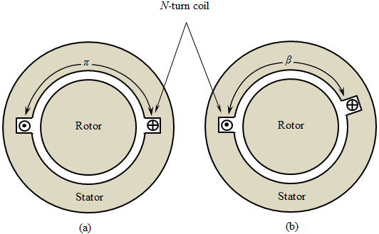

class: center, middle # EE-362 ELECTROMECHANICAL ENERGY CONVERSION-II ## Ozan Keysan [ozan.keysan.me](http://ozan.keysan.me) Office: C-113 <span class="meta">•</span> Tel: 210 7586 --- # Rotating Wave from Pulsating Waves <img src="http://www.ece.umn.edu/users/riaz/animations/sinwaves0.gif" alt="Drawing" style="width: 750px;"/> --- # Rotating Phasor from Pulsating Phasors <img src="http://www.ece.umn.edu/users/riaz/animations/vecmovieslow.gif" alt="Drawing" style="width: 500px;"/> --- # Equivalent of Rotating MMF ## \\(F\_{total} (t) = \dfrac{3}{2}F\_m cos (\theta - \omega t) \\) <img src="http://familywings.org/wp-content/uploads/2012/01/donkey-and-carrot.jpg" alt="Drawing" style="width: 500px;"/> --- # You should already know these: -- - ## MMF, Flux, Flux Density -- - ## Rotor, Stator, Shaft, Gap -- - ## Axial, Radial, Tangential -- - ## Slot, Tooth --- ## Magnetic Field Intensity (H) in a C-Core -- ## $$\oint_C {\vec{H}.d\vec{\ell}} = N I $$ -- ## $$ H = \dfrac{NI}{l} $$ ### \\(l\\) is the total integration length, or total airgap lenght if there is an infitinely permeable core. --- # Magnetic Field Intensity (H) in a Machine ## Single Coil -- <img src="https://raw.githubusercontent.com/ozank/ozank.github.io/master/presentations/images/mmf_single_coil.png" alt="Drawing" style="width: 800px;"/> --- # A few real-life examples ### Chevy Spark EV [Motor Manufacturing](https://webcache.googleusercontent.com/search?q=cache:erlBKC1ctPYJ:https://www.caranddriver.com/news/a18744950/we-build-the-chevy-spark-evs-ac-permanent-magnet-motor/+&cd=1&hl=tr&ct=clnk&gl=tr) ### [Disributed winding schematic](https://www.researchgate.net/profile/Jakob_Igelspacher/publication/241174581/figure/fig3/AS:340780838342662@1458259891354/Fig-4-Schematic-example-of-a-distributed-winding-of-an-axial-flux-induction-machine.jpg) ### [Preformed coils](https://www.heinrich-schuemann.de/files/uploads/Produkte/Elektromaschinenbau/staenderformspulen/niederspannungsspulen-1.jpg), [Preformed coils-2](http://www.swcoils.com/Images/Coils/edge-wound-coils-2.jpg) ### [Coils in the stator](http://gef.com.my/images/Stator_Winding_Final_Checking_The_New_Coils_Dimension_Before_Rewound.jpg), [Coils in the stator-2](https://4.imimg.com/data4/YY/YY/GLADMIN-/wp-content-uploads-2015-11-diamond_coils_03-500x500.jpg) --- # Constructing MMF Distribution -- ## 1- Use Ampere's Law: ## (\\(\oint_C {\vec{H}.d\vec{\ell}} = N I \\)) for each slot -- ## 2- Use Superposition Method: ## (MMF contribution from each coil) --- # Distributed Winding ### Many coils are connected in series and distributed over many slot to achine a more sinusoidal MMF distribution -- <img src="https://raw.githubusercontent.com/ozank/ozank.github.io/master/presentations/images/distributed_coil.png" alt="Drawing" style="width: 400px;"/> --- # Distributed Winding MMF ### Let's calculate the MMF distribution of the following coils with superposition method. -- <img src="https://archive.cnx.org/resources/4c32a23bdea4d9526203717809c6d6c8bf92e77e/graphics13.png" alt="Drawing" style="width: 500px;"/> --- # Distributed Winding MMF ## If there were just one concentrated the coil, the MMF distribution would be be like: <img src="http://www.eeeguide.com/wp-content/uploads/2015/12/MMF-of-Distributed-AC-Windings.jpg" alt="Drawing" style="width: 500px;"/> --- # Distributed Winding MMF ### Let's calculate the MMF with the distributed coil: -- <img src="https://archive.cnx.org/resources/8cbc00b4366fcb581988511a2b55b5bdee858576/graphics14.png" alt="Drawing" style="width: 600px;"/> --- # Distributed Winding Manufacturing ###Videos - [Production of electric machines](https://www.youtube.com/watch?v=5Mu42TzHy8M) (T=6:00) - [Rewinding a Large Motor](https://www.youtube.com/watch?v=_65mXQ-GNVM) (T=0:20) - [BMW i8-How it's made](https://www.youtube.com/watch?v=w_p8Y1YrrfI) (2:05) - [Induction Motors: Overhauling a Motor](https://www.youtube.com/watch?v=yPvYd03cKJU) --- # Three Phase Windings -- ### How can you place 3-phase winding with 120 degree phase shift? -- [Rotating MMF animation with discrete windings](http://people.ucalgary.ca/~aknigh/electrical_machines/fundamentals/f_ac_rotation.html) --- ## Exercise: How to combine distributed winding with 3-phase? -- ## Draw the following winding diagram. - ## 12 slots - ## 3-phase (2 pole) - ## Full-pitch (?) - ## Each coil has N-turns --- ## Full-Pitch Coil ? -- <img src="https://www.electrical4u.com/wp-content/uploads/2013/04/full-pitched-short-pitched-winding-11.10.13.png" alt="Drawing" style="width: 800px;"/> --- ## Full-Pitch Coil ?  ### (a)Full-pitched coil, (b) Short-pitched coil --- ## Exercise: How to combine distributed winding with 3-phase? ## Draw the following winding diagram. - ## 12 slots - ## 3-phase (2 pole) - ## Full-pitch (?) - ## Each coil has N-turns --- # Number of Poles -- : 2-pole machine <img src="https://raw.githubusercontent.com/ozank/ozank.github.io/master/presentations/images/2pole_mmf.jpg" alt="Drawing" style="width: 450px;"/> --- # Number of Poles: 4-pole machine <img src="https://raw.githubusercontent.com/ozank/ozank.github.io/master/presentations/images/4pole_mmf.jpg" alt="Drawing" style="width: 450px;"/> --- # 2 Pole vs. 4 Pole <img src="https://raw.githubusercontent.com/ozank/ozank.github.io/master/presentations/images/2pole_4pole.png" alt="Drawing" style="width: 700px;"/> --- ## Electrical Angle is not equal to Mechanical Angle! # \\(\theta\_{elec} = (\dfrac{p}{2}) \theta\_{mech} \\) ## \\(p\\) : Number of poles (always even number) ## \\(\dfrac{p}{2}\\) : Number of pole pairs ## \\(\omega\_{elec} = (\dfrac{p}{2}) \omega\_{mech} \\) (radians/second) --- # Examples -- ## Convert the previous machine to 4-pole machine - ## 12 slots - ## 3-phase (4-pole) - ## full-pitch - ## Each coil has N-turns --- #Group Quiz -- ## Q1: 12 slot, distributed winding, Single Phase, (2 slots per pole per phase). Full-pitched. -- ### a) Draw the winding diagram in a developed diagram ### b) Draw the MMF distribution for 1 A --- #Group Quiz ## Q2: 12 slot, distributed winding, 3 phase (2 slots per pole per phase) ### a) Draw the winding diagram in a developed diagram ### b) Draw the MMF distribution for: ##i) Ia = 1 A , Ib= -0.5 A, Ic = -0.5 A ##ii) Ia = 0.5 A , Ib= 0.5 A, Ic = -1 A --- ## You can download this presentation from: [keysan.me/ee362](http://keysan.me/ee362)